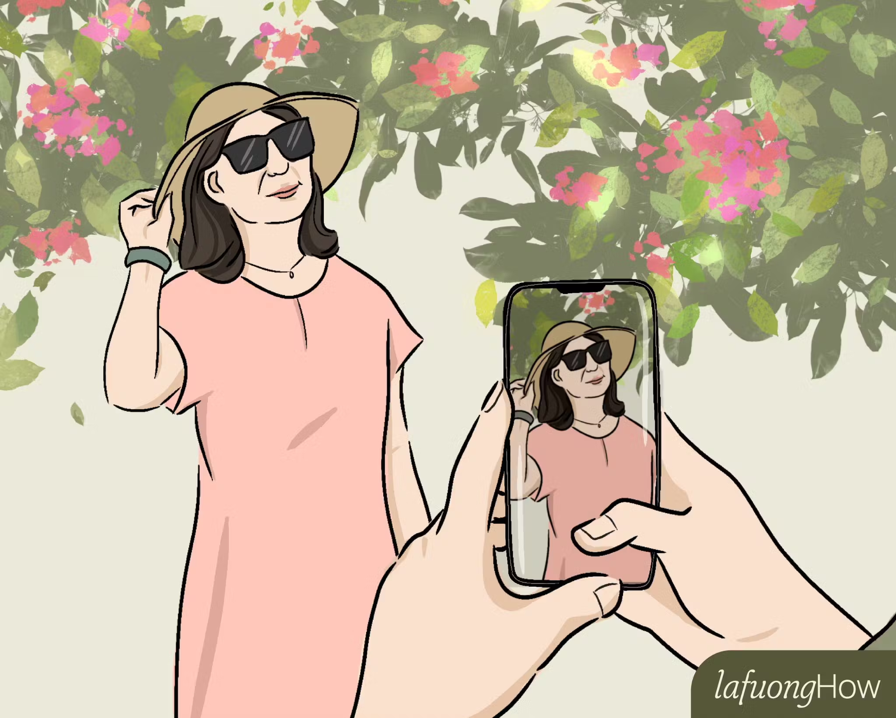
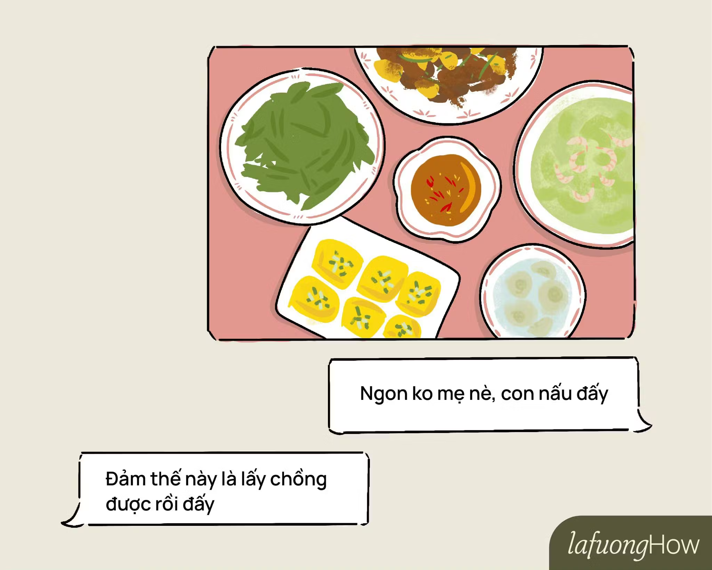
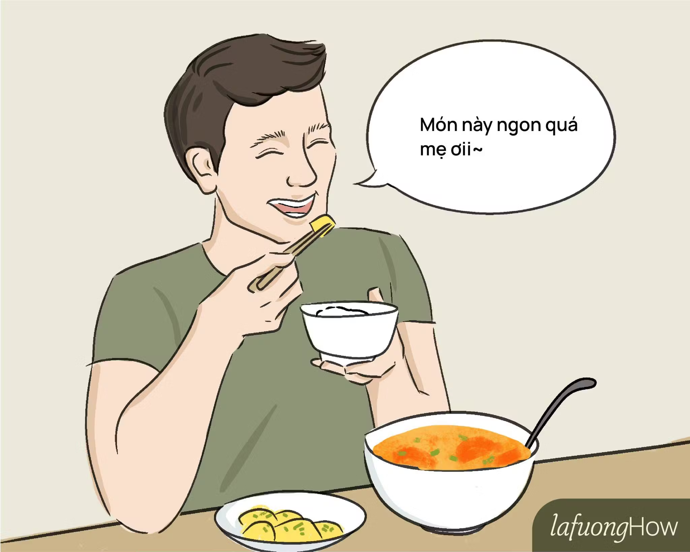
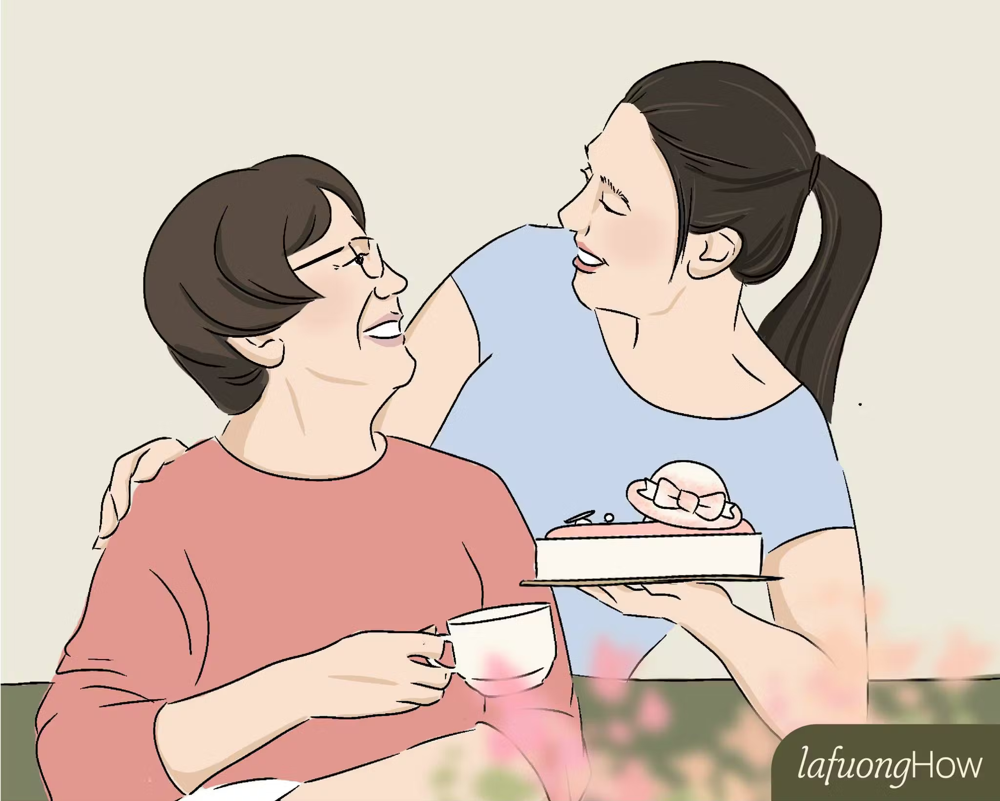
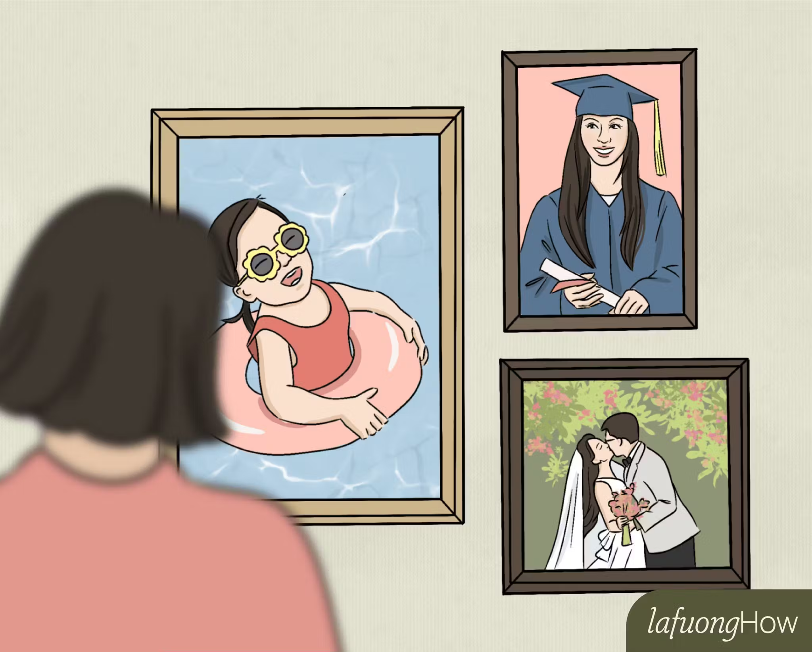
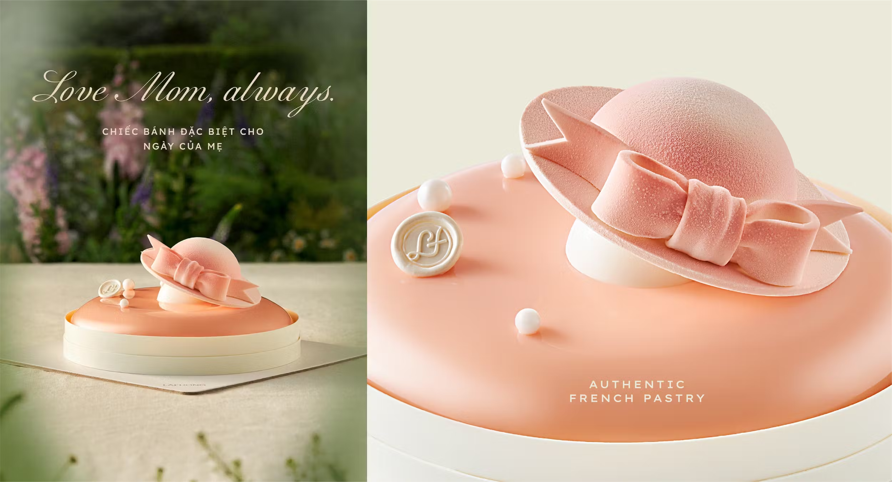

Bổ ích
Cách làm mẹ vui
Sweet Treats

Đừng ngần ngại bảy tỏ tình cảm của mình dành cho Mẹ theo cách riêng của bạn. Chúng ta không nhất định phải nói "Con Yêu Mẹ" nhưng những hành động nhỏ như giúp mẹ việc nhà, nấu bữa ăn mẹ thích hay đơn giản là dành thời gian trò chuyện cùng mẹ cũng đủ để mẹ cảm nhận được tình yêu và lòng biết ơn của bạn.
Bước 01: Đơn giản là ở bên cạnh Mẹ
Chợt nghe qua có vẻ là dễ, nhưng một khi đã trưởng thành, thời gian để ở cạnh Mẹ sẽ dần trở nên ít hơn rất nhiều so với khi ta còn bé. Làm cùng Mẹ dù chỉ là những hoạt động thường nhật như nấu ăn, đi dạo, chụp ảnh hoặc xem phim, đã là điều mà Mẹ rất thích rồi đó.
Bước 02: Để Mẹ luôn cảm thấy an tâm
Dù là ngày buồn hay vui, hãy luôn kể cho mẹ nghe về một ngày của bạn. Đó cũng là một cách để mang đến niềm vui cho Mẹ bằng những câu chuyện nho nhỏ, kể lại những kỷ niệm hài hước, khoe những thành tựu mà bạn cảm thấy tự hào. Nếu khi ở xa, hãy luôn gọi điện hoặc nhắn tin để Mẹ biết rằng bạn vẫn đang làm tốt.
Bước 03: Bày tỏ sự biết ơn với những lời nói dịu dàng
Dành cho Mẹ thật nhiều lời khen, vì mẹ đã luôn dành cho ta những điều tốt đẹp nhất. Đừng ngần ngại bày tỏ tình cảm của mình. Dù truyền thống của nhiều gia đình Việt chúng ta vẫn luôn là thể hiện tình yêu qua hành động thay vì lời nói, hãy nhớ rằng bạn có thể chủ động thay đổi điều đó. Cứ mạnh dạn nói ra lời cảm ơn vì những gì Mẹ đã làm cho bạn, vì Mẹ sẽ luôn ghi nhớ những gì chúng ta nói.
Bước 04: Tạo bất ngờ nho nhỏ cho Mẹ
Thỉnh thoảng, bạn có thể tạo bất ngờ nhỏ cho mẹ, như tặng một bó hoa, một chiếc váy Mẹ thích, hoặc chuẩn bị một món tráng miệng đặc biệt. Như là chiếc bánh của Sweet Treats dành cho ngày của Mẹ chẳng hạn. Giới thiệu những điều thú vị mới mẻ của giới trẻ cho Mẹ, như cách Mẹ đã chuẩn bị chiếc bánh kem sinh nhật đầu đời cho bạn.
Bước 05: Trưởng thành và độc lập
Chăm sóc và yêu thương chính mình. Vì niềm vui của mẹ là được thấy bạn hạnh phúc. Sống một cuộc sống tốt đẹp chính là món quà lớn lao nhất mà bất kỳ ai cũng có thể dành tặng cho Mẹ của mình. Khi bạn trưởng thành và có thể tự đưa ra những quyết định đúng đắn của riêng mình, Mẹ sẽ cảm thấy tự hào và an lòng. Hãy cho mẹ thấy rằng bạn biết cách tự chăm sóc bản thân và có thể đối mặt với cuộc sống một cách mạnh mẽ.
Đó cũng là những gì mà Sweet Treats Pastry mong muốn gửi gắm vào chiếc bánh Everlasting Love dành cho Ngày của Mẹ năm 2024.
Lấy tạo hình là chiếc nón gắn một chiếc nơ hồng phấn – là món đồ mà các Mẹ, ai cũng muốn giữ cho mình một chiếc để diện khi đi chơi cho thật xinh. Đôi lúc, vì có nhiều lo lắng trong cuộc sống mà Mẹ quên mất cách chăm sóc cho chính mình, trở nên xinh đẹp và yêu thương bản thân. Đó cũng chính là thông điệp mà Sweet Treats muốn gửi tới: Mẹ ơi, hãy đi chơi, nghỉ ngơi, làm đẹp và tận hưởng cuộc sống!

Tái bút:
Làm Mẹ vui không chỉ đòi hỏi những món quà vật chất, mà quan trọng hơn là những hành động và cử chỉ yêu thương, sự quan tâm chân thành từ trái tim. Trao đi những lời nói dịu dàng nhất, nhấc máy hỏi thăm Mẹ ngay khi có thể nhé!